Ejemplo de una base de conocimiento,
preguntas y esquema
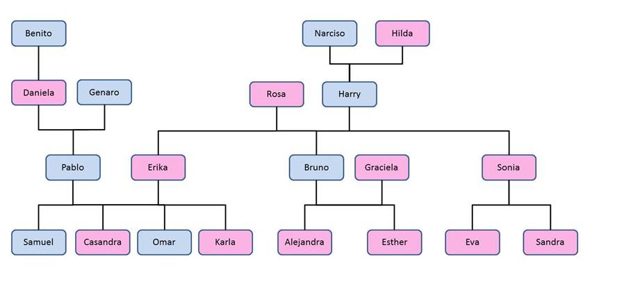
Clic en la imagen para maximizar
Base de
conocimiento (clic en los hipervínculos de Versión
para visualizar)
Versión 1 abrir (Base Sencilla)
|
Lenguaje Normal |
Prolog |
|
Quién es el papá de Karla? R=Pablo |
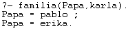 |
|
Daniela es abuela de Samuel? R=Sí |
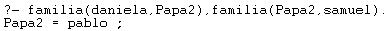 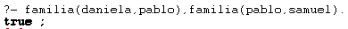 |
|
Quién es bisabuela de Sandra? R=Hilda |
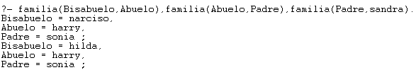 |
|
Quién es nieto de Rosa? R=Samuel, Casandra, Omar, Karla, Alejandra,
Esther, Eva, Sandra |
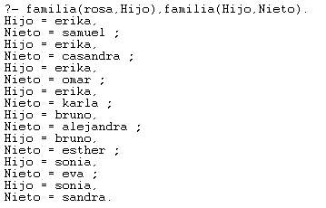 |
|
Sandra y Alejandra son
hermanas? R=No |
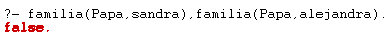 |
En esta primera base de conocimiento se observa una estructura
simple basada únicamente en el hecho familia/2, el cual representa relaciones
de parentesco sin especificar el rol (padre, madre, etc.). Esto permite consultas
básicas, pero también genera ambigüedades.
Por ejemplo, al preguntar por el “papá” de Karla, el sistema
devuelve tanto a Pablo como a Erika, ya que ambos aparecen como progenitores,
pero no se distingue entre padre y madre.
Asimismo, al consultar si Daniela es abuela de Samuel, se puede
llegar al resultado verdadero, pero se requiere una sustitución manual
intermedia, lo que indica que aún no se han definido reglas específicas para
deducir relaciones como "abuela" o "nieto".
Además, al preguntar por una bisabuela, se obtienen respuestas
donde el género no se puede inferir directamente del hecho familia/2, por lo
que aparecen tanto abuelos como abuelas como posibles respuestas.
Este ejemplo demuestra cómo en una etapa temprana del desarrollo
de la base, la falta de relaciones definidas con mayor detalle (como padre/2,
madre/2, abuela/2, etc.) obliga al usuario a construir manualmente las
inferencias necesarias para obtener respuestas específicas. Es útil para
mostrar cómo Prolog trabaja con hechos y cómo se pueden encadenar para deducir
relaciones, pero también deja en claro la necesidad de una mejor estructuración
para consultas más precisas y semánticamente claras.
Versión 2 abrir
(Base intermedia)
|
Lenguaje Normal |
Prolog |
|
Quién es bisnieto de Hilda? R=Samuel y Omar |
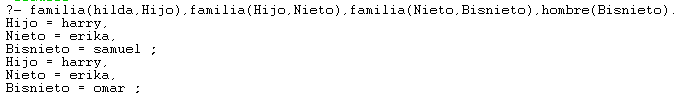 |
|
Quien es tíA de Casandra? R=Sonia (del lado sanguíneo) |
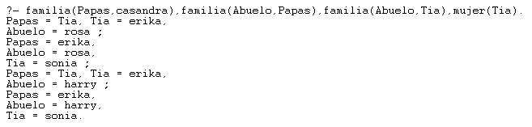 |
|
Quién es abuelO de Eva? R=Harry |
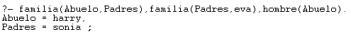 |
|
Erika y Sonia son hermanas? R=Sí |
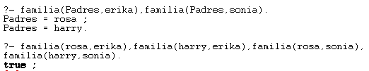 |
|
Quién es nietA de Genaro? R=Casandra y Karla |
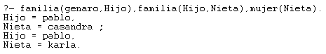 |
Esta segunda base de conocimiento representa un avance
significativo respecto a la versión anterior, ya que incorpora distinciones por
género mediante los predicados hombre/1 y mujer/1. Gracias a esta adición, los
resultados comienzan a ser más precisos, permitiendo formular consultas más
específicas como “¿quién es la nieta
de alguien?” o “¿quién es el abuelo
de alguien?”, evitando ambigüedades de género.
Sin embargo, a pesar de esta mejora, las relaciones familiares más
complejas (como bisnietos o tíos) todavía requieren escribir múltiples
cláusulas manuales para cada consulta. Esto implica un nivel de codificación
más alto y repetitivo, lo que vuelve ineficiente escalar esta base para
familias más grandes o consultas más amplias. Es un buen paso intermedio, pero
aún hay oportunidad de mejorar su estructura para facilitar la reutilización de
lógica y evitar duplicación de esfuerzo.
Versión 3 abrir
(Base avanzada con relaciones complejas)
|
Lenguaje Normal |
Prolog |
|
¿Quién es bisnieta de
Narciso? R=Casandra, Karla, Alejandra,
Esther, Eva y Sandra. |
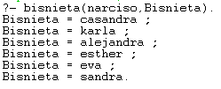 |
|
Quien es concuña de Pablo? R=Graciela. |
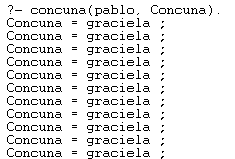 |
|
Quién es yerno de Rosa? R=Pablo. |
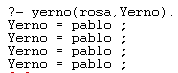 |
|
¿Quién es sobrina de Bruno? R=Casabdra, Karla, Eva y Sandra. |
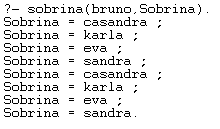 |
|
¿Quiénes son cuñados de
Pablo? R=Bruno y Sonia. |
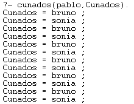 |
En esta última versión, el lenguaje natural se asemeja
considerablemente al lenguaje utilizado para hacer las consultas en Prolog.
Esto se debe a que la base de conocimiento ha sido estructurada de forma más
completa, permitiendo expresar relaciones familiares con un mayor nivel de
detalle y precisión.
Ahora es posible consultar no solo por relaciones directas como
padres o hermanos, sino también por relaciones más complejas como cuñados,
concuños o yernos, lo que convierte a esta versión en una herramienta mucho más
versátil. Esta estructura refleja una comprensión más profunda del manejo de
reglas en Prolog.
Sin embargo, se observa que algunos resultados se repiten varias
veces. Esto sucede porque internamente Prolog encuentra múltiples rutas que
satisfacen la misma consulta y muestra cada una como una solución válida.
Aunque existen técnicas más avanzadas para evitar estas repeticiones (como el
uso de setof/3, once/1, o condiciones adicionales), estas técnicas exceden el
alcance del contenido abordado hasta el momento. Aun así, la estructura
desarrollada permite continuar expandiendo y refinando la base si se desea.